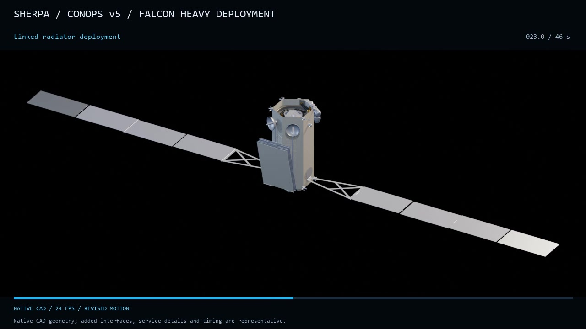
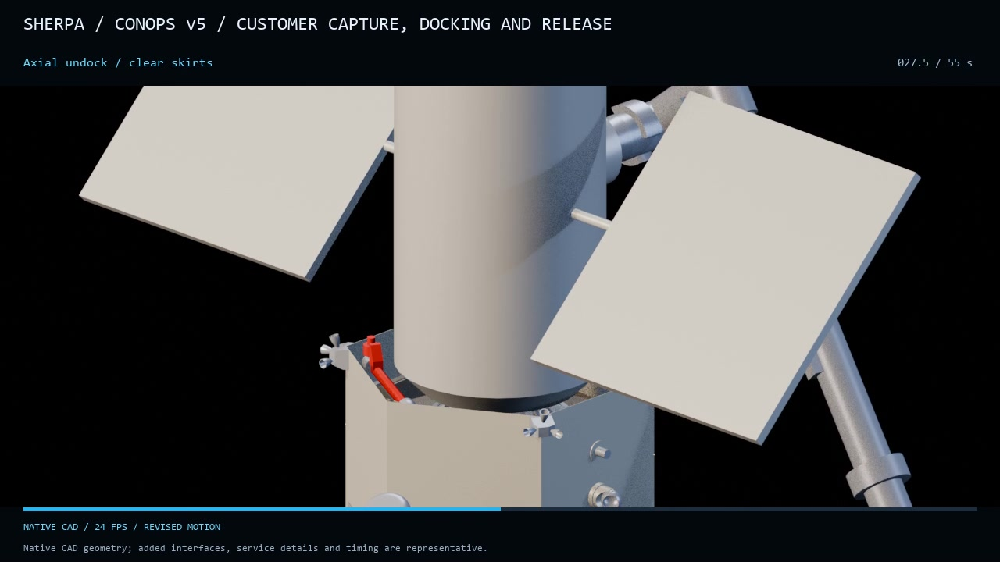
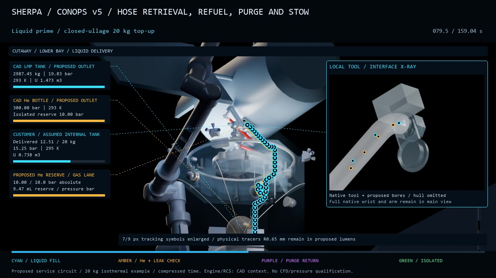
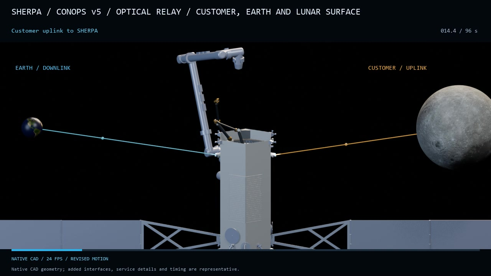
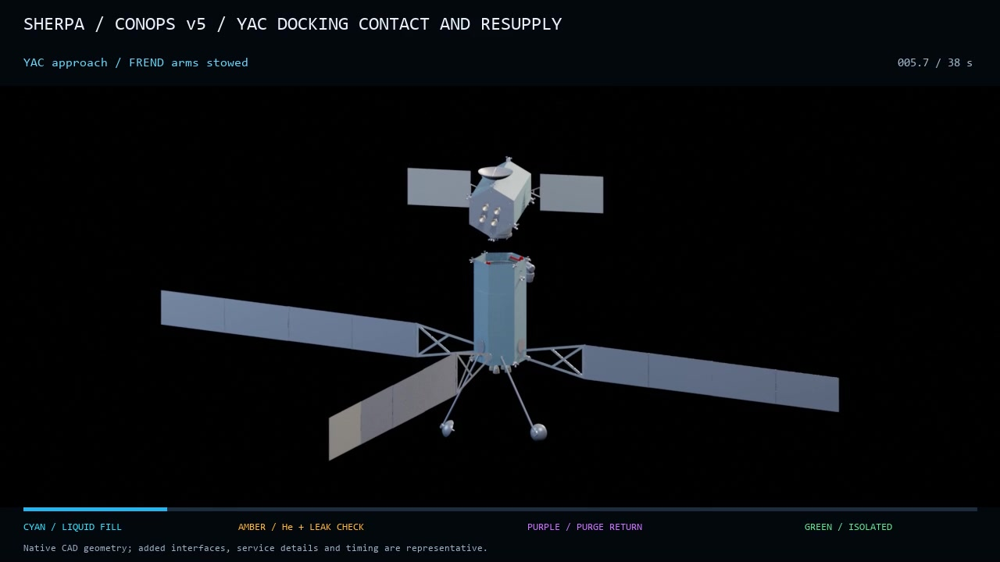
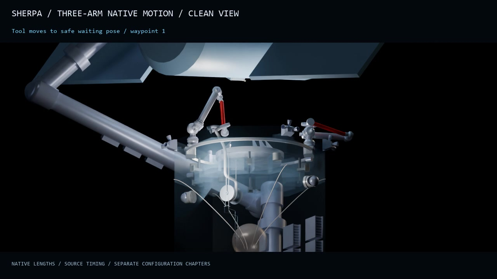
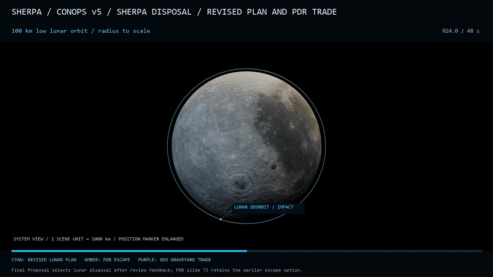
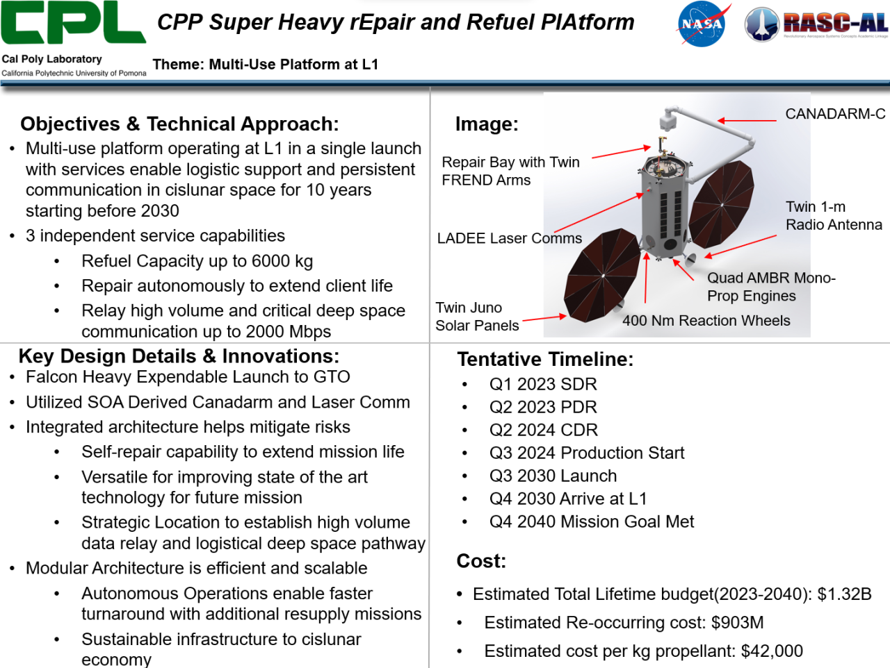
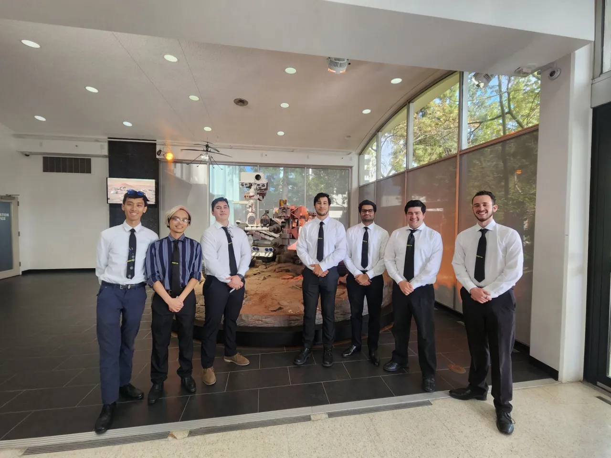

6 seconds / silent
DeploymentFrom launch-vehicle separation to deployed spacecraft.2 videos / Explore →Home / Simulations / Study 05
Cal Poly Pomona · NASA RASC-AL proposal
Turn a servicing mission into a system concept.
The student team proposed a multi-use platform near Earth-Moon L1 for spacecraft servicing, refueling and communications relay.

The proposal connects arrival, docking and servicing with architecture choices, technology assumptions, mass estimates and budget planning.
From deployment to disposal
Follow the SHERPA concept through deployment, customer servicing, relay operations and resupply. These 17 silent CAD animations show the proposed sequences, interfaces and camera views.







Select a legend entry to hide or show it
In the Earth-centered view the Moon and L1 turn around Earth once every 27.3 days, and the rotating frame holds them fixed as in the team plot. The 3D view tilts the Earth-centered frame, and you can turn it by dragging or with the arrow keys. The path stays in the Earth-Moon plane, because the team plot is planar. This replay is my reconstruction of Fig. 4. Each arc is a circular restricted three-body propagation (Earth-Moon mass ratio 0.01215) fitted to the plotted lines, so timing is approximate and some loops of the original are not retraced.

FIG. 5Concept summary: capabilities, schedule and cost estimates
FIG. 6The SHERPA project teamConcept artwork and presentation: SHERPA team, Cal Poly Pomona / NASA RASC-AL · As part of the proposal team, I contributed to this shared mission-concept study · Capabilities, timelines and costs describe a concept